好ましい撮影イメージ
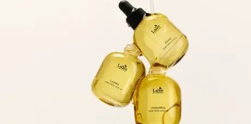
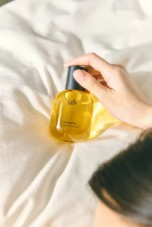
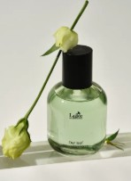
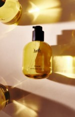
 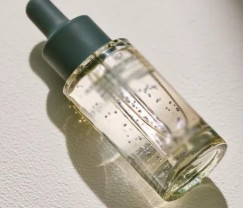
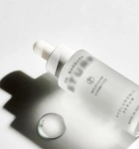
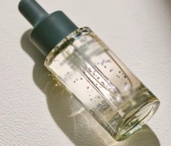
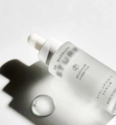
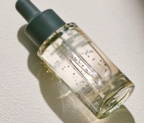
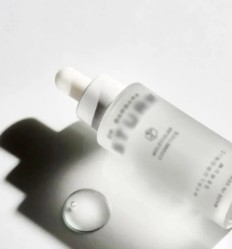
| 製品名 | ロージーブルーム 高濃度ビタミン美容 アンプル20ml |
|---|---|
| コンテンツ参加期間 | 11/22〜12/3 |
| 必須ハッシュタグ | #ATTATION #アンプルおすすめ #スキンケア #トーンアップ #美容 |
| アカウントタグ | @attation.jp / @attation_official |
| 必須内容 | ① キョンドン製薬開発、ロジブルーム、ビタミン、
トーンアップ、ブライトニング、 肌への刺激最小化、美白、シワ改善 ― これらのワードの掲載必須 ② 澄んだ光が肌に溶け込む瞬間、ロジブルーム(製品名です.) ③ ダマスクローズとビタミンが出会い、澄み渡る透明感へ。 |
| 撮影ガイド | 撮影ガイドラインに従って進めてください！ 1) 手のひらにアンプルをのせたアップカット 2) 透明感が分かるテクスチャー＋自然光のカット 3) 顔が少し映る使用カット（軽いテスト程度でOK) 4) 全体の雰囲気は“清潔感・透明感のあるスキンケア”っぽい明るいトーンでお願いします。 追加案内事項: ホワイトニング” 表記NG → ブライトニング を使用 |
| NGワード | 基本的なNG事項 * 他のブランドの露出禁止 *競合他社企業名、商品名、商品の露出はNG *暗いところで撮影して、商品がよく見えないことはNG *ロゴが反対側になることはNG *ブランド名、商品名、パッケージ、商品の発色がよく見えないことはNG *本商品、サービスに関するイメージがマイナス、ネガティブになる表現はNG *商品を直接使用しないで発色投稿だけすることはNG |
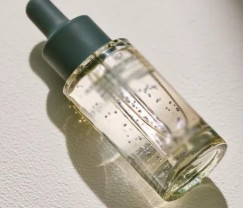
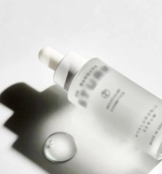
「LADOR」は「Laboratory」と「adorable」を組み合わせたもので、“あらゆるニーズに合わせて製品を開発し、美しさを完成させる”ということに着目し、
ヘアケアに特化したノウハウと経験を持つ元美容師や研究者から作られた韓国のヘアケア専門ブランドです。
長年にわたりヘアケアを中心に高品質な製品づくりを続け、
お客様から厚い信頼を得ている韓国を代表するヘアケアブランドです。
近年ではUVケアやボディケアまで展開を広げ、韓国で大きな話題を集めています。